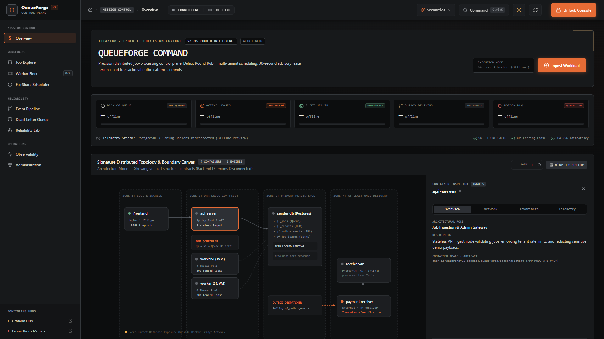
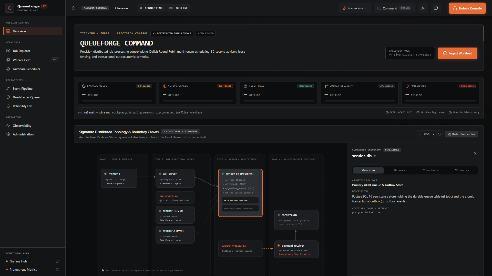
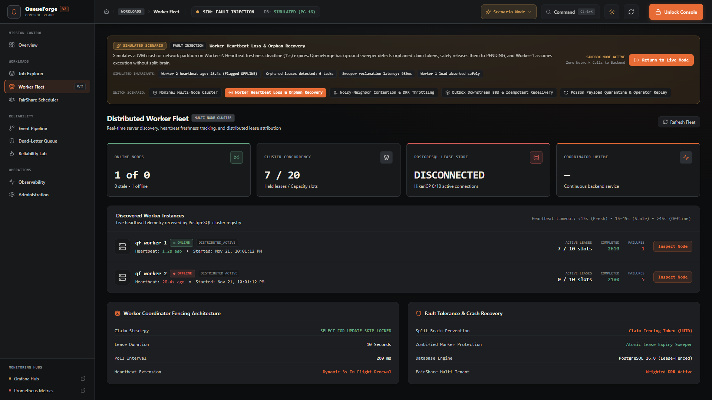
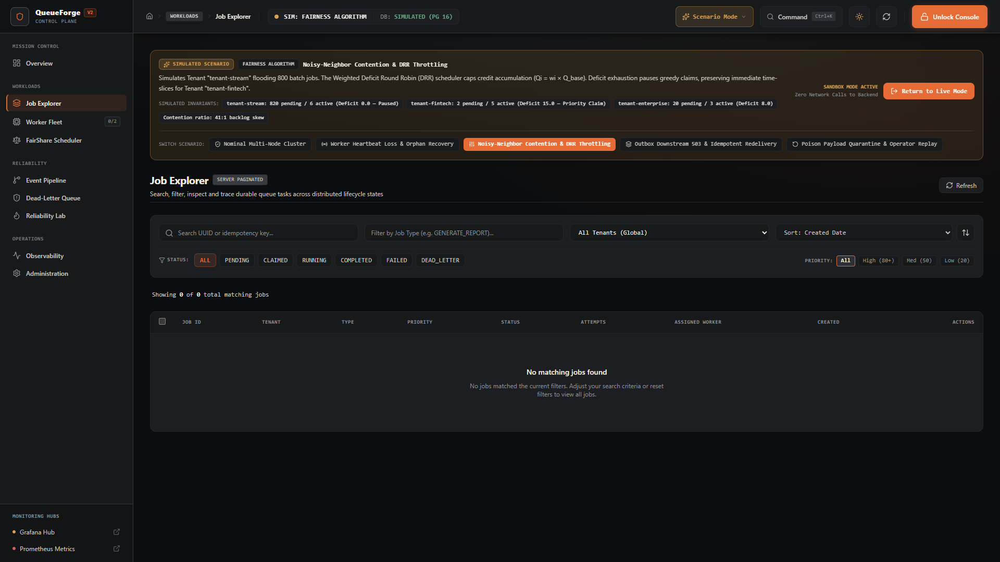
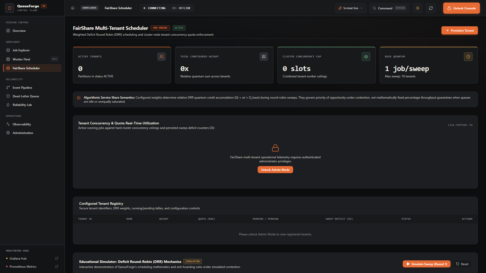
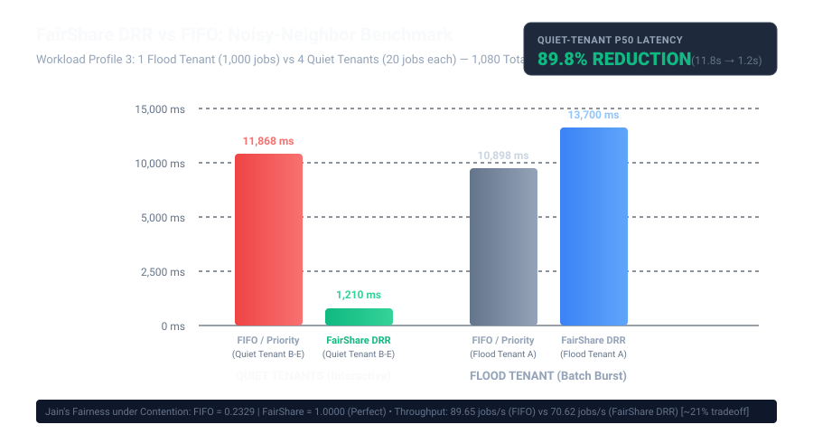
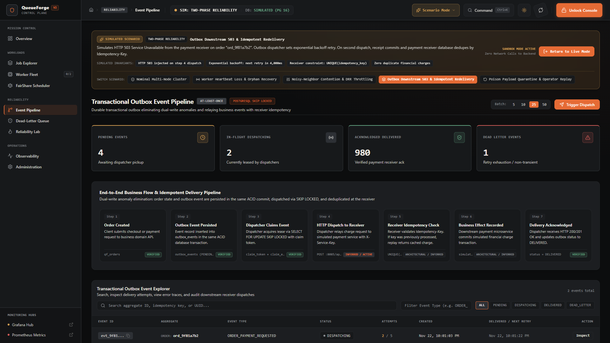
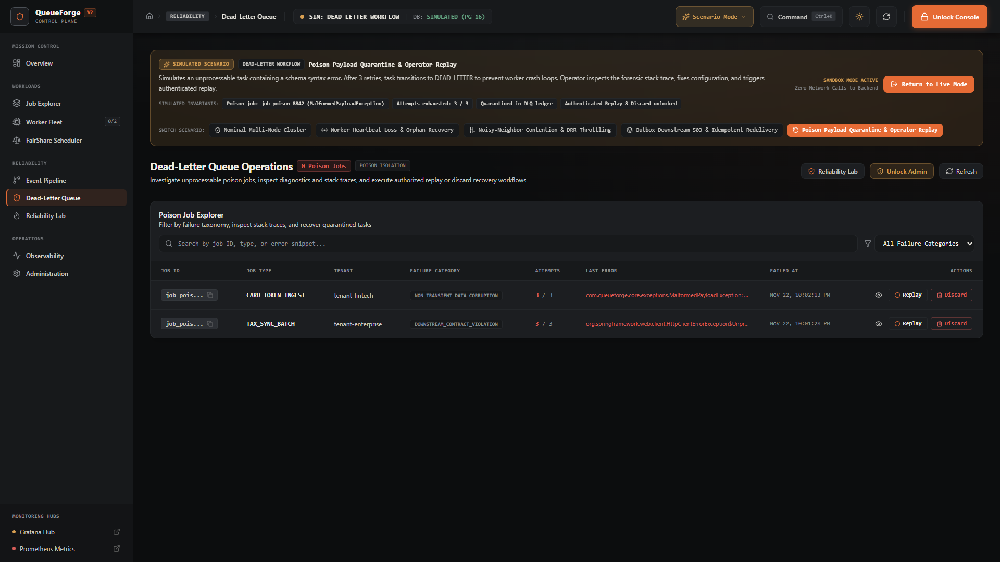
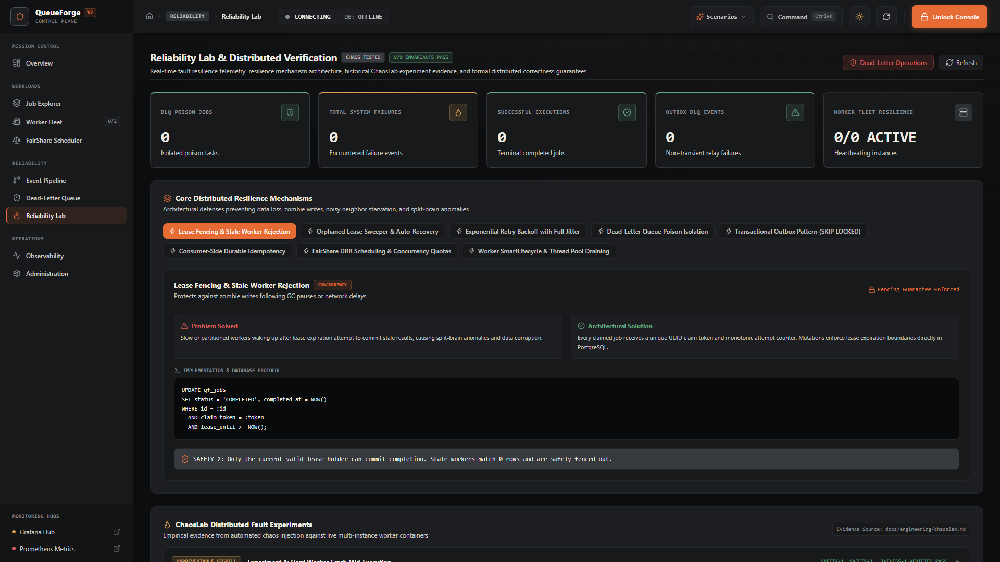
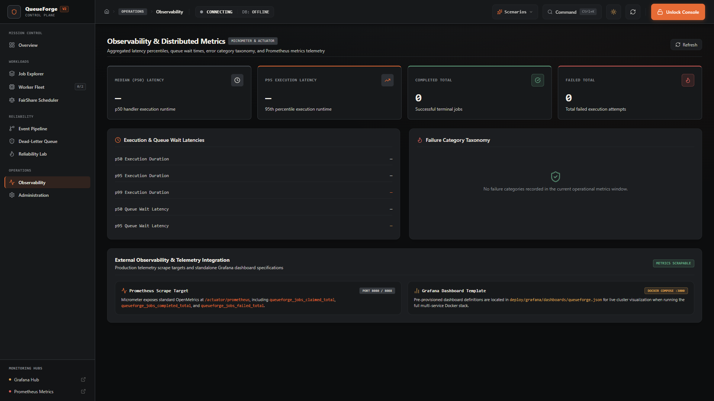

QueueForge Command: ACID-Durable Distributed Task Engine
PostgreSQL 16 Relational Queuing, Worker Fencing & Multi-Tenant Scheduling without External Brokers
Scene 1 • Product Introduction

⚡ Dual-Write Hazard Solved
Traditional message brokers (Kafka/RabbitMQ) introduce operational overhead and the dual-write hazard: if database commits succeed but broker publishing fails, tasks are lost. QueueForge turns PostgreSQL 16 into a resilient ACID task engine with zero message broker dependencies.
🖥️ Titanium × Ember Control Plane
• Public Showcase: Deployed live on Cloudflare Pages at
• Frontend Stack: React 19, TypeScript, Vite 6, Tailwind CSS, TanStack Query.
• Truthful Status: Clearly indicates
https://queueforge.pages.dev.• Frontend Stack: React 19, TypeScript, Vite 6, Tailwind CSS, TanStack Query.
• Truthful Status: Clearly indicates
Live Cluster (Offline) without backend simulation deception.
Zero Broker
Infrastructure Simplicity
100% ACID
Relational Durability
Decoupled 7-Service Topology & Network Isolation
Two Private Docker Bridge Networks, Zero Host Port Exposure & Sub-2.4 GB Memory Ceiling
Scene 2 • System Architecture

🏗️ Decoupled 7-Container Topology
• Ingress & API: Nginx 1.27 Alpine edge reverse proxy and Spring Boot
• Worker Tier: Independent
• Persistence: Primary
api-server (Java 21).• Worker Tier: Independent
worker-1 and worker-2 running in WORKER_ONLY mode.• Persistence: Primary
sender-db and isolated receiver-db (PostgreSQL 16.8) with zero host port exposure.
🔒 Strict Network Boundary Security
Partitioned across two isolated Docker bridge networks (
qf-prod-backend-net and qf-prod-receiver-net). Workers interact with the payment receiver over HTTP with service-key headers, strictly bounding memory under 2.4 GB aggregate.
7 Services
Decoupled Micro-Cluster
Zero Port
PostgreSQL Host Isolation
Distributed Workers & Contention-Free Claiming
PostgreSQL SKIP LOCKED, Cryptographic Monotonic Lease Fencing & Zombie Crash Recovery
Scene 3 • Job Processing


⚙️ Contention-Free Row Claiming
Concurrent Spring Boot workers query pending jobs using
SELECT FOR UPDATE SKIP LOCKED inside atomic Common Table Expressions (CTEs), eliminating row-lock contention and serialization bottlenecks completely.
🛡️ Monotonic Split-Brain Fencing
Every claim establishes a 30-second time-bounded lease and a monotonic
claim_version token. If a worker stalls, the recovery reaper re-queues the expired lease. A returning zombie worker is fenced out, preventing split-brain writes.
30s Lease
Auto Reaper Sweeper
Fenced
Split-Brain Protected
FairShare Multi-Tenant DRR Scheduling Benchmark
Deficit Round Robin Prevents Noisy-Neighbor Starvation Under High Contention
Scene 4 • FairShare Scheduling


📊 Verified Noisy-Neighbor Benchmark
Under a 1,080-job flood test (1 flood tenant @ 1,000 jobs, 4 quiet tenants @ 20 jobs each), FairShare reduced quiet-tenant median queue wait from 11,868 ms down to 1,210 ms—an 89.8% latency reduction.
⚖️ Controlled Fairness Tradeoff
Jain's Fairness Index reached a perfect 1.000. This fairness carries an observed aggregate throughput tradeoff (89.65 jobs/s FIFO vs 70.62 jobs/s DRR) under heavy contention.
89.8%
Wait Time Reduction
1.000
Jain's Fairness Index
Atomic Transactional Outbox & Idempotent Delivery
ACID Dual-Write Order Persistence, HTTP Dispatching & SHA-256 Receiver Deduplication
Scene 5 • Transactional Outbox

📦 Guaranteed Single-Transaction Commit
Domain entities and outbox events commit together in a single PostgreSQL ACID transaction. If database operations fail, no event is published. If network calls fail, the outbox record persists safely for background retry.
🛡️ Exactly-Once Receiver Deduplication
An asynchronous dispatcher polls
qf_outbox_events and executes HTTP POSTs with exponential backoff. The downstream receiver enforces inbox deduplication using SHA-256 payload fingerprints and primary-key constraints.
Zero Loss
Outbox Delivery Guarantee
SHA-256
Inbox Deduplication Key
Dead-Letter Queue, Fault Recovery & Cryptographic Security
Transient Backoff, Permanent Quarantine, Authenticated Replay & Constant-Time Security
Scene 6 • Reliability & Security


⚠️ Intelligent Error Classification
• Transient Failures: Socket timeouts and HTTP 503s trigger exponential backoff with full jitter across 3 attempts.
• Permanent Failures: 400 Bad Request or malformed payloads bypass retries and route directly to the DLQ.
• Permanent Failures: 400 Bad Request or malformed payloads bypass retries and route directly to the DLQ.
🔐 Constant-Time Security & Replay
Operators inspect failure stack traces and replay jobs securely. Administrative operations require constant-time key validation (
MessageDigest.isEqual) to prevent timing attacks.
3 Retries
Jittered Backoff
Constant-Time
Admin Key Verification
Public Interactive Demo & 302-Test Automated CI Baseline
Cloudflare Pages Public Showcase, 302 Automated Tests & 8 Docker Smoke Stages
Scene 7 • Public Demo & CI

✅ GitHub Actions Post-Merge CI: 7 / 7 Jobs Green
Run #45041622474 • 302 Automated Tests
🌐 Live Cloudflare Interactive Showcase
Accessible worldwide at
https://queueforge.pages.dev. Visitors interact with deterministic architectural simulations (Healthy, Worker Failure, DRR Contention, Outbox Retries) with zero backend overhead.
🧪 302 Verified Automated Tests
• Backend Integration: 187 JUnit 5 & Testcontainers tests.
• Payment Receiver: 13 Auth & Deduplication tests.
• Frontend Quality: 82 Vitest & React Testing Library tests.
• Browser E2E: 20 Playwright browser tests + 8 Docker smoke stages.
• Payment Receiver: 13 Auth & Deduplication tests.
• Frontend Quality: 82 Vitest & React Testing Library tests.
• Browser E2E: 20 Playwright browser tests + 8 Docker smoke stages.
302 Tests
100% Passing Suite
8 Smoke
Docker Verification Stages